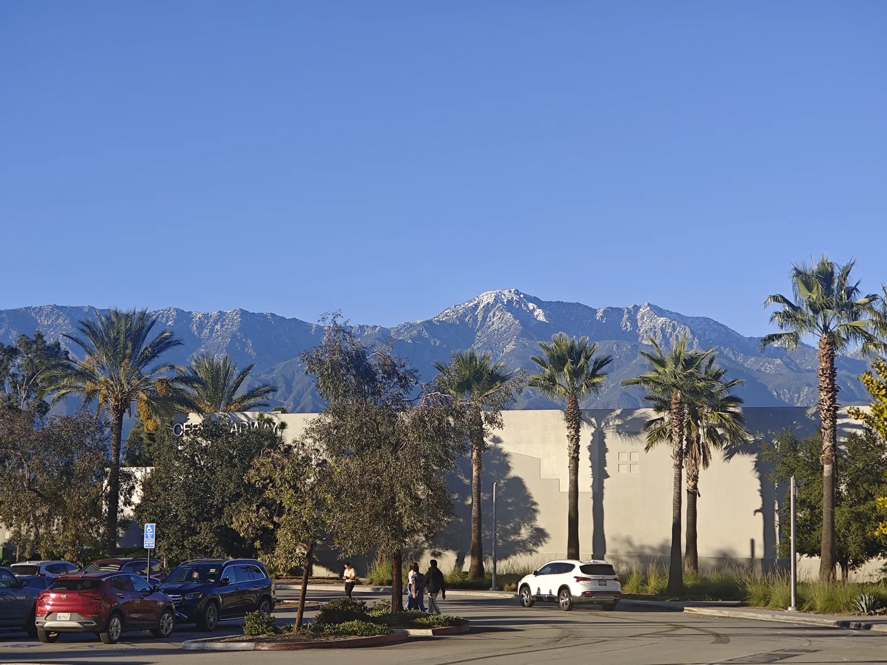

ONTARIO, CALIFORNIA
安大略
购物街区与远处的雪山，记录安大略的一次短途外出。
2025.11.25 — 11.25RTA 公交 · Uber
放大地图查看照片
交通路线巴士打车 / 包车 / 团体巴士
公共交通按线路或途经站点绘制，均为行程示意；未记下的具体班次留空。航班连线非实际飞行轨迹。
每日记录 1 天
DAY 01
安大略街区与雪山
RTA 公交＋Uber在 Ontario Mills 周边逛街，远望棕榈树后的雪山。
→
途中远望蓝天下的雪山11.25 · 15:21 安大略途中棕榈树后的雪山11.25 · 15:44 Ontario Mills 购物区购物间隙的一份小食11.25 · 19:01 Ontario Mills 购物区
暂无照片。